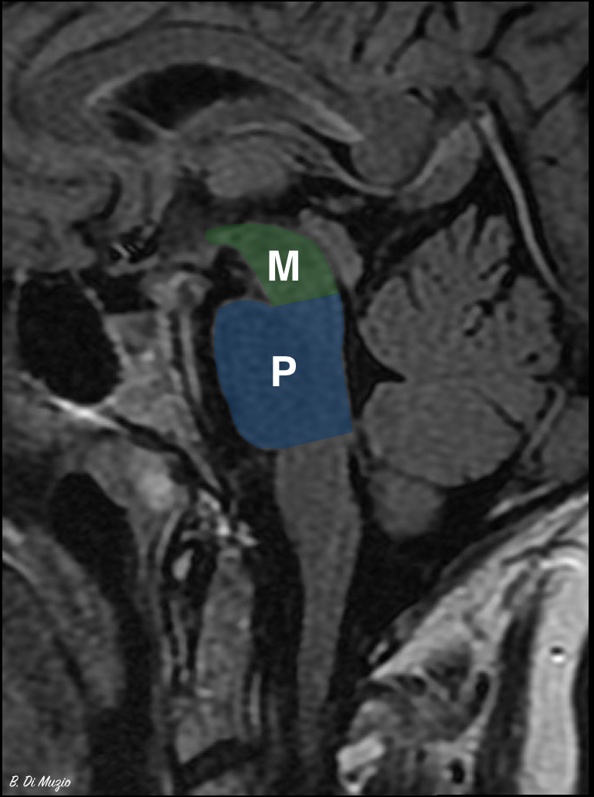
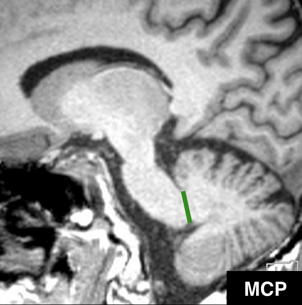
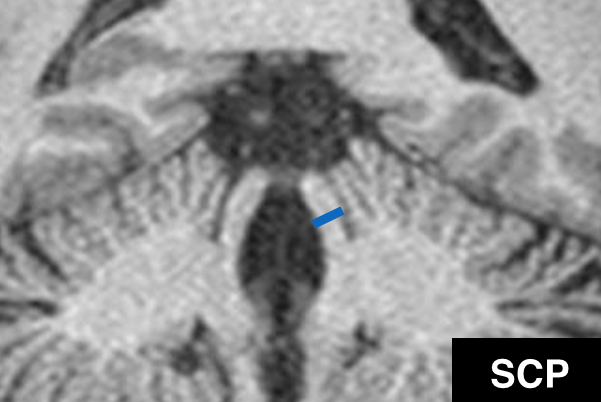
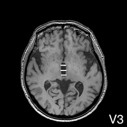
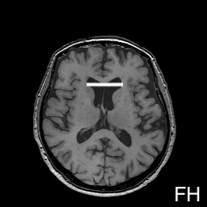

MRPI and MRPI 2.0 calculator
This calculator computes the magnetic resonance parkinsonism index (MRPI) and MRPI 2.0 from midsagittal brainstem areas, cerebellar peduncle widths and, for MRPI 2.0, ventricular widths.
Scope. For adults with a parkinsonian syndrome in whom progressive supranuclear palsy (PSP) is suspected. All measurements are made on a volumetric T1-weighted acquisition. The result should be interpreted together with the clinical findings.
Midbrain and pons

Cerebellar peduncles
Middle cerebellar peduncle (MCP)
Parasagittal image, maximal width of the peduncle.

Superior cerebellar peduncle (SCP)
Oblique coronal image tangent to the floor of the fourth ventricle.

Ventricles (for MRPI 2.0, optional)
Third ventricle width (V3)
Three measurements of the maximal distance between the lateral borders; the calculator takes the mean.

Frontal horn width (FH)
Maximal left-to-right distance across the frontal horns.

Result
Formulas, cut-offs and references
MRPI = (P / M) × (MCP / SCP), where P and M are the midsagittal areas of pons and midbrain, and MCP and SCP the mean widths of the middle and superior cerebellar peduncles 1.
MRPI 2.0 = MRPI × (V3 / FH), where V3 is the third ventricle width and FH the frontal horn width 2.
PSP atrophies the midbrain and the superior cerebellar peduncles and relatively spares the pons and the middle cerebellar peduncles, so both indices increase. In MSA-P the pons and the middle cerebellar peduncles are affected instead, and MRPI is usually low. MRPI 2.0 also includes the third ventricle width, which increases early in PSP; it was introduced to improve the detection of the PSP-parkinsonism (PSP-P) phenotype.
| Index | Cut-off | Context |
|---|---|---|
| MRPI | >13.55 | PSP vs Parkinson disease and MSA-P 1 |
| MRPI 2.0 | ≥2.50 | PSP-Richardson syndrome vs Parkinson disease or controls 2 |
| MRPI 2.0 | ≥2.18 | PSP-parkinsonism vs Parkinson disease or controls 2 |
MRPI increases with disease duration. A normal value does not exclude PSP, particularly in early disease and in phenotypes other than Richardson syndrome. The sensitivity and specificity reported in the original series have not been reproduced in most later cohorts.
- Quattrone A, Nicoletti G, Messina D et al. MR imaging index for differentiation of progressive supranuclear palsy from Parkinson disease and the Parkinson variant of multiple system atrophy. Radiology. 2008;246(1):214-21. doi:10.1148/radiol.2453061703
- Quattrone A, Morelli M, Nigro S et al. A new MR imaging index for differentiation of progressive supranuclear palsy-parkinsonism from Parkinson's disease. Parkinsonism Relat Disord. 2018;54:3-8. doi:10.1016/j.parkreldis.2018.07.016
- Di Muzio B. Magnetic resonance parkinsonism index. Case study, Radiopaedia.org (Accessed on 30 Sep 2026). doi:10.53347/rID-36925 (source of the midbrain and pons, MCP and SCP images)
- Case courtesy of Giorgio Maria Agazzi, Radiopaedia.org, rID: 216483. radiopaedia.org/cases/216483 (source of the third ventricle and frontal horn images)
See also: magnetic resonance parkinsonism index and midbrain to pons ratio on Radiopaedia.org.
Calculator output text (hidden on the live page)
Wording the calculator produces. Placeholders in braces are filled in by the calculator.
Measurements line (uses {m}, {p}, {mcp}, {mcpr}, {mcpl}, {scp}, {scpr}, {scpl})
Ventricles line (uses {v3}, {v3list}, {fh})
MRPI above the cut-off (uses {mrpi})
MRPI below the cut-off (uses {mrpi})
MRPI 2.0 at or above 2.50 (uses {mrpi2})
MRPI 2.0 between 2.18 and 2.50 (uses {mrpi2})
MRPI 2.0 below 2.18 (uses {mrpi2})